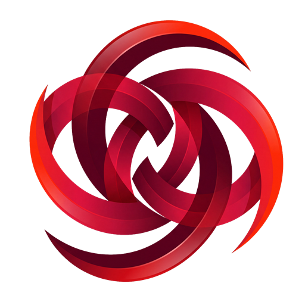

ODIN Assistant Prototype
Flow asisten dari task sampai momen, dengan knowledge base dummy siap pakai
Mode Asisten
Knowledge base ready
Tahap 1
Task sudah masuk
Task aktif akan dipakai agent untuk membaca knowledge base dummy dan menyiapkan shortlist source.
Belum ada task aktif. Isi task di panel kiri lalu klik Mulai.
Tahap 2
Shortlist source
Agent menawarkan beberapa source yang paling mungkin relevan terhadap task dan knowledge base.
Source shortlist akan muncul setelah agent membaca task.
Tahap 3
Perilaku, emosi, situasi
Hasil observasi ini adalah bahan sebelum agent menyusun momen.
Observasi akan muncul setelah source dikunci.
Tahap 4
Momen
Agent menyusun rekomendasi scene dari awal sampai akhir video. User bisa edit sebelum mengunci hasil.
Momen akan muncul setelah observasi disetujui.